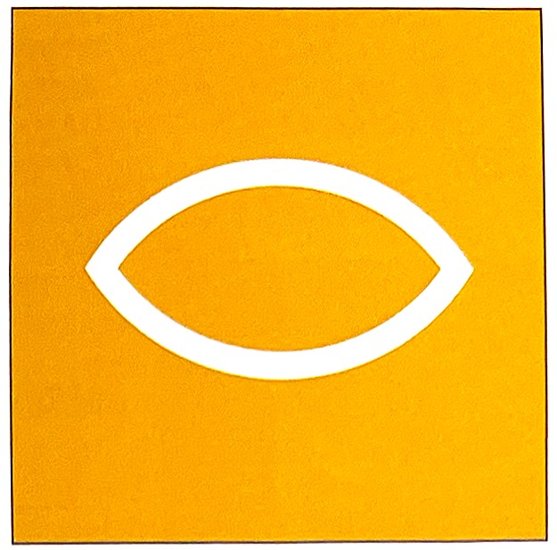
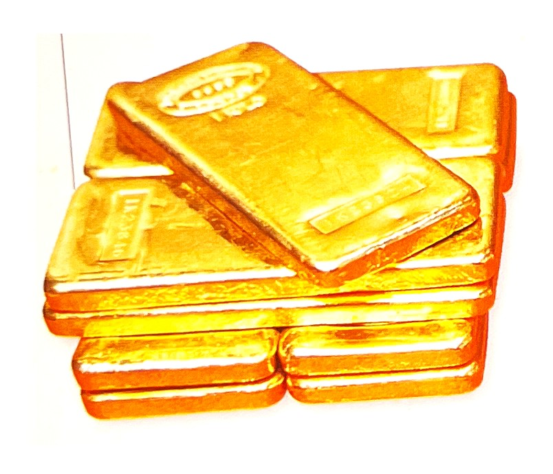
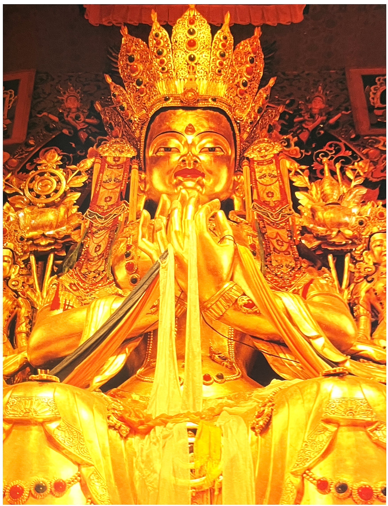

긍정적 연상:
태양을 신비한 것으로 생각하는 관점, 위엄, 부, 영광, 지혜
부정적 감정과 상징:
우상 숭배
정치.종교적 상징:
그리스-아테네 여신의 옷, 흰두교-브라마(빨강과 함께), 창조자

금색의 심볼[4]
금색의 매력[3]
노란색 계열 중에서도 금색의 매력은 대단하다.
괴테는 파우스에서 다음믄장으로 표현했다.
"모든 것을 "모든 것을 걸고 금을 쫒는구나. 아, 불쌍한 우리들이여!"
금은 비밀로 채워져 있다. 합리적으로 설명할 수 없는 매력이 담겨 있다. 금은 희소성 그 자체로 귀하다. 하지만 이런 요소만으로 금의 가치가 매겨지진 않는다.
금은 태양빛을 받을 때 찬란한 모습을 보인다. 이런 이유 때문인지 예 사람들은 금을 태양의 일부라고 믿었다. 이런 이유로 금에 신적인 힘이 있다고 여기기도 했다. 그들이 썼던 황금 투구와 황금 왕관에 빛을 비추면 마치 작은 태양같이 광채를 뿜는다. 동그란 금전도 태양의 모양을 형상화한 것이다.
금에 얽힌 역사[3]고대 이집트는 금이 풍부한 나라였다. 이곳에서 발견된 장신구, 부적은 물론 파라오의 왕관도 순금으로 제작 되었다. 청동기 말 아프리카 지역, 소아시아, 인도 등지에서도 금을 찾기 시작했다. 게르만, 갈리아, 슬라벤, 헬베티 부족도 이런일에 열심이었다.
금이 부족했던 로마제국은 황금을 얻기 위해 스페인에 속했던 이베리아 섬을 정복하기도 했다. 스페인도 전쟁으로 멕시코와 페루를 차지하며 금과 보물을 확보했다. 원래 이곳을 지키던 잉카와 아즈텍 문명에서는 서양과 달리 금을 경제적 지불수단 으로 보지 않았다. 원주민이 추앙하는 신과 왕을 뜻하는 귀한 상징물이었다.
아즈텍인들은 "태양은 불같은 금빛 화살을 가진 절대자이자 신이다."라고 주장해 왔다. 그들은 백색 피부를 가진 서양의 정복자들이 단지 부를 축적하기 위해 아우성인 모습을 이해할 수 없었다. 전 생애를 다 바쳐서라도 황금을 찾겠다는 열정은 중남부 아메리카의 금 자원을 서서히 고갈시켰다. 그럼에도 열성적인 일부 모험가는 아랑곳하지 않고 황금으로 이뤄졌다는 전설의 '엘도라도'를 찾아 방랑했다. 상상 속 그곳은 주민들이 금으로 된 공간에서 목욕을 할 수 있을 만큼 호화로운 장소다. 기대와 달리 이런 낙원은 아직까지 발견된 바 없다.
19세기 골드러시는 아프리카의 미개척지인 서부에서 시작되었다. 알래스카, 오스트레일리아, 남부 아프리카, 시베리아에도 열기는 퍼져 나갔다. 자연산 황금을 발견하는 게 어렵다고 느낀 이들은 일찌감치 인공적인 방법에 주목했다. 연금술이 그것이다. 고대 이집트에서 시작한 연금술은 15~17세기에 전 유럽에 퍼져나가며 전성기를 맞았다. 이런 연금술은 신비주의 철학, 심령학, 자연과학, 철학 등이 특별하게 어우러지며 발전했다. 많은 사람들은 연금술로 만들어진 이른바 '권능의 돌'을 찾기위해 애를 썼다.
이런 돌에 대한 생각은 여러 변화를 가져왔다. 극소수이기는 하지만 일부에서는 이를 내면의 인식과정으로 보았다. 그러나 대다수는 오직 순금을 구하기 위해 이뤄진 의미없는 시도라고 비판했다. 더 나아가 그 폐단도 지적했다. 시간이 갈수록 기법이 교묘해져 가짜순금을 진짜로 둔갑시키는 등 여러 문제가 생겨났던 탓이다. 표면상 올바르지 못한 길을 걷는 경우가 많았다.
오늘날 원자 물리학은 정말로 인조금을 생산해낸다. 이런 인조금은 가격뿐 아니라 제작비용도 상당하다. 사람들이 금에 내리는 평가는 사실 비합리적으로 보인다. 그럼에도 이전 경향은 여전하다. 대문에 종종 금 사재기 경향이 일어 금융 흐름까지 경색시킬 정도다.
시간이 흐르며 금은 민간생활에도 밀접해졌다. 마몬Mammon, 부의신을 숭배하는 의미로 '금송아지 주위를 돌면서 추는 춤'이 존재했듯 금은 여러가지로 특별한 평가를 받았다. 황금문서, 금혼식, 금메달, 황금 분할, 중용golden Mean 등에서 공통으로 찾을 수 있는 요소가 금이다. 뿐만아니라 중세 화가들이 초상화를 그리는 등 예술 활동을 하는 데도 금은 소중하게 쓰였다. 금가루를 이용한 초상화는 이미 이집트 시대까지 거슬러 올라간다. 소위 '미리 초상화'란 것이 그렇다. 이 그림은 죽은 자를 뚜렷하게 그리기 위해 판때기나 돌을 조각한 후 금가루를 뿌린 형태다. 이후 서양에서는 그리스도교 성화를 제작할 때도 비슷한 기술 원칙을 따랐다.
성화의 스케치 대상은 실제 인물이 아니었지만 그림 자체가 주는 특별한 느낌 때문에 되풀이되어 그려졌다. 반짝이는 금빛이 천국의 느낌으로 추상화되어 신성한 분위기를 자아냈던 데 이유가 있다. 금을 라틴어로 아우룸Aurum이라 한다. 여기서 우리가 흔히 쓰는 아우라Aura,후광란 말도 파생된다. 신적인 후광Aureole과 대비되는 뜻으로 '인간적인 후광'이란 뜻이다. 이밖에도 금은 오랜 세월 찬란한 행운의 표상이었다. 이런 점은 오늘날까지 남아 있다.
금색의 심리학[2]금색은 빛나는, 햇볕이 잘 드는, 자극적인, 따듯한, 가벼운, 훤히 비치는, 쾌활한, 좋은 기분, 곡식의 이삭, 넓음, 개방, 젊은, 사교적이라는 단어를 연상케 한다. 금색은 그와 관련된 요소의 쓰임새를 더욱 높인다. 귀한 가치를 드러내게 하는 것이다. 힘이 넘쳐 보이는 금색은 집중을 유도한다. 특히 검정, 빨강과 배색된 금색은 화장품, 담배, 과자류, 음료수 등 제품의 희소성을 부각시킨다.[3] 다른 상품보다 비싸 보이게 하는 효과가 있다.
금색성향의 사람은 꾸밈없이 자신에 대해 얘기하는 순수함을 지녔다. 이들은 이미 자신이 어떤 사람인지 발견했으므로, 이를 애써 찾지 않는다. 이들은 깊은 내면의 이해에 접근했고 이미 지나간 것으로부터 얻은 마음의 경험에 접근한다. 무엇보다 중요한 특징은 본인 스스로를 잘 알고 있다는 점이다. 지혜란 타인과의 관계 속에서 부여 받은 것이지 혼자 힘으로 획득하게 된 것이 아님을 깨달은 옛 현인(賢人)들도 금색성향을 지닌다.
금색은 리더십의 색상이기도 하다. 리더는 항상 내면에 금색 기미를 보이며, 스스로를 전진하도록 하는 깊은 자기 성찰도 한다. 이들은 분명 빈틈없는 사람이라 쉽게 속아 넘어가지 않는다.
금색은 경험과 성숙의 색상이다. 금색 성향의 사람은 비밀리에 성숙단계를 거쳐, 표면화 되었을 때, 굳건한 일광을 보여준다. 이 성향을 지닌 사람들은 젊지는 않다. 인생의 시련을 겪어 왔고, 오랜 경험을 통해 축적된 귀중한 노하우도 지니고 있다.
순수한 금색은 그자체 금속성과 같다. 견고하고 더럽지 않고 순수함을 상징한다.
시간을 견디어 내는 가장 지혜롭고 진실됨은 황금의 속성이다.
[참고문헌]:
[1] 컬러, 그 비밀스러운 언어 COLOR, 조앤 액스터트, 아리엘 엑스터트, 신기라 옮김,시그마 북스, 2014.9.10.
[2] 몸과 마음을 치료하는 색채, 릴리안 베르너 본즈, 번역 한창환, 도서출판 국제, 2008.1,10.
[3] 색의 힘, 하랄드 브램, 번역 이재만, 일진사, 2010.5.20.
[4] 색채 디자인 교과서, 문은배 지음, 길벗, 2010.12.28
....
....
....
....
....
....
....